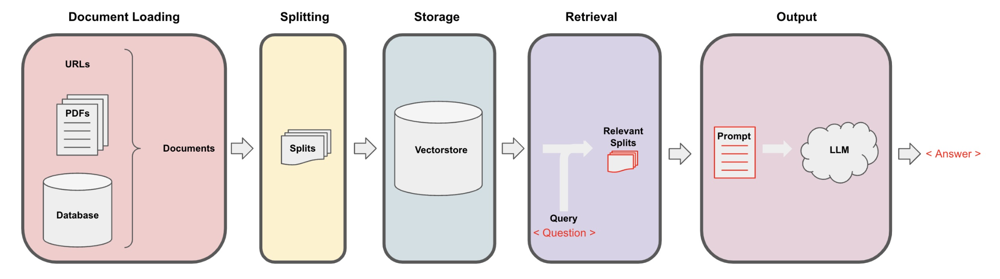

Slides
The following tutorials are mainly based on the excellent course “LangChain: Chat with Your DataI” provided by Harrison Chase from LangChain and Andrew Ng from DeepLearning.AI and cover the following topics:

Take a look at the slides tutorial to learn how to use all slide options.
You have several options to start code development:
Colab: Click on one of the links “💻 Jupyter Notebook” to start a Colab session.
Local: Click on one of the links “💻 Jupyter Notebook” below, go to the Colab menu and choose “File” > “Download” > “Download .ipynb”
Cloud Codespace: Work in a fully configured dev environment in the cloud with a GitHub Codespace VS Code Browser environment.
Local VS Code with Codespace: Use GitHub Codespaces in your local Visual Studio Code environment.
1 What is Retrieval-Augmented Generation (RAG)?
Large language models usually give great answers, but because they’re limited to the training data used to create the model, over time they can become incomplete–or worse, generate answers that are just plain wrong. One way of improving the LLM results is called “retrieval-augmented generation” or RAG.
In this video, IBM Senior Research Scientist Marina Danilevsky explains the LLM/RAG framework and how this combination delivers two big advantages, namely: the model gets the most up-to-date and trustworthy facts, and you can see where the model got its info, lending more credibility to what it generates.
2 Document Loading
Learn the fundamentals of data loading and discover over 80 unique loaders LangChain provides to access diverse data sources, including audio and video:
3 Document Splitting
In the context of building LLM-related applications, splitting is the process of breaking down large pieces of text into smaller segments:
4 Vector stores and embeddings
Learn the concept of embeddings and explore vector store integrations within LangChain.
5 Retrieval
Learn advanced techniques for accessing and indexing data in the vector store, enabling you to retrieve the most relevant information beyond semantic queries:
6 Question Answering
Build a one-pass question-answering solution.
7 Chat System
Learn how to track and select pertinent information from conversations and data sources, as you build your own chatbot using LangChain.
8 LangChain cookbook
Some example code for building applications with LangChain, with an emphasis on more applied and end-to-end examples (see this site for more examples):
- Semi-structured RAG: This cookbook shows how to perform RAG on documents with semi-structured data (e.g. PDF with tables and text)